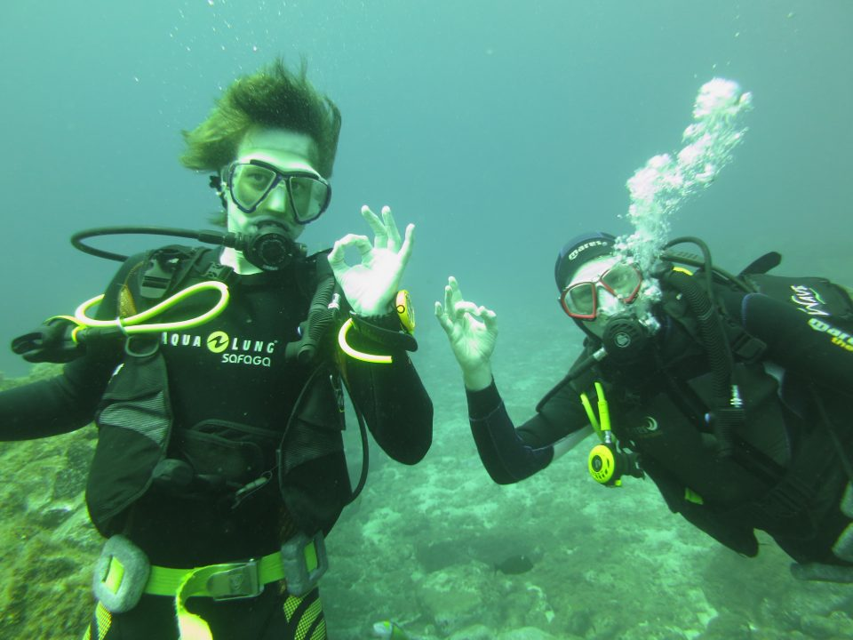

Tenerife April 2014

This was a lovely warm water trip, which everyone seemed to really enjoy. Highlights were that:
- James W and Mark passed Ocean Diver, James G got his first experience of instructing in open water and Emily H completed her cross-over from PADI
- newer members gained valuable diving experience in a range of conditions (boat, shore, sunny, windy, rough)
- Experienved divers buddied up with the less experienced ones and enjoyed the oppurtunity to share their skills
- Sarah got some great photos with her camera
- Gareth came out of the closet as a non-diver and a hard-core cyclist
Who Came
- James Gardner
- Claire Bale
- Emily Hughes
- James Wilson
- Emily Morgan
- Gareth Morgan (now a non-diver)
- Chris MacNab
- Emma Noble (non-diver)
- Rachel White
- Mark Wingrove
- Olivia Blandford-Guyon
- Charlie Masding
- Trevor Peacock
- Philip Gray
- Phil Johnston
- Sarah Armstrong
What we saw
- Dolphins from the boat
- Cuttlefish
- Octobus
- Arrow crabs
- Trumpet fish
- Sea hare on the night dive
- Lots of little puffer fish
- Ornate wrasse
- Bluefin Damselfish
- Zebra bream
- Atlantic rays
- Eagle ray
- Lizzard fish
- Blenny
- Roncador (bastard grunt)
- Grouper
- White bream
- Flat fish (plaice)
Must not touch category:
- Black, brown and yellow fangtooth morray eels
- Fireworms
- Sea urchins (one discovered in Sarah's knee)
- Scorpion fish
- Jellyfish (especially not with face and lips as James G did - ouch!)
Diving
We dived with Aqua-Marina in Vista Sur. It was well placed for the beach, restaurants and the appartments which were right behind the centre.
We also had our own wet room at the dive centre equipped with toilet (unflushable), showers and washing facilities which was really handy.
There were too many of us for the one boat so we spent the first two days in three groups:
- one boat usually dived from Las Galletas (kit went in orange bags and everyone drove to las Galettas)
- one group walked kit down to the boat at the shore near the centre
- the thrid group did training shore dives
After the first two days the trainees joined the others so that we just had two groups.
The third day was rather rough - quite a challenge for the trainees' first boat dive. They all got down though and enjoyed a picturesque dive.
The diving included:
- shore dives
- boat dives
- a night dive around the local breakwater
- wall dives
- cave dives
- wreck dives - El Condesito
- swim-throughs
- scenic marine life dives
- descending and ascending the anchor line
The underwater landscape was mainly terraces of ledges that go down to a sandy bottom with pinnacles/gullies and overhangs.
Trevor's GoPro flooded on El Condesito - but it survived!
Après Dive
The biggest decision most of us had to make was whether to go for a large beer (jarra) or a small beer after the day's diving!
- Emily M and Sarah A's birthdays
- Expensive mojitos at the magic bar
- Noisy nightclub developed our signing experience - we all hit 50 bar at 6:30am and did an ascent back to the accommodation - some of our ascents were more controlled than others! Improvised bow-ties and straw "art"
- Frequent visits to little Italy - recommend the vegetarian pizza (and limoncello!) - Trevor managed 4 in a row.
- Cheap beer and friendly staff at the family bar - our regular meeting place. Mark took the garlic mayonnaise challenge, and survived!
And finally...
... we all had a jolly good time!